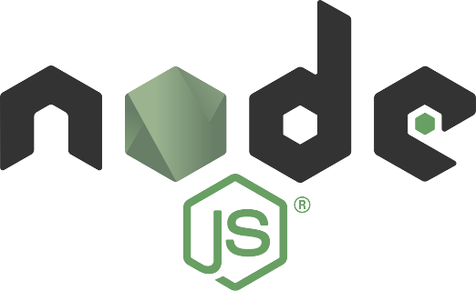

JavaScript
Aktualizacja: 29.01.2017
Zastosowanie
Przy tworzeniu stron internetowych oprócz samego języka Javascript niezbędne jest zrozumienie kodu HTML, oraz podstaw CSS-a. Dowiedz się o tym więcej tutaj.
Javascript to dynamicznie typowany język, wysokiego poziomu. Najczęściej jest używany przy tworzeniu stron WWW, który służy zapewnieniu interaktywności stron oraz obsłudze zdarzeń, walidacji formularzy i budowaniu elementów nawigacyjnych. Pracę tą znacznie wspomaga JQuery - ogromna biblioteka ułatwiająca pisanie w tym języku i korzystanie z szeregu gotowych funkcji. Jenak lepiej zacząć od "czystego" języka i trzeba mieć na uwadze, że nie ma sensu podpinać sporo ważącej biblioteki dla użycia 2 funkcji, która ona oferuje. To co go wyróżnia to, to, że w JavaScript wszystko jest obiektem.
Dzięki frameworkom takim jak electron.js czy nw.js możliwe jest tworzenie pełnoprawnych, wieloplatformowych aplikacji/gier lokalnych jak i sieciowych/deamonów za pomocą technologi webowych HTML, CSS i samego języka Javascript, za sprawą tego, że oba używają Node.js i przeglądarki Chromium.
Node.js jest działającym po stronie serwera, wieloplatformowym środowiskiem uruchomieniowym JavaScript. Oznacza to, że za jego pomocą możesz uruchomić kod JavaScript bezpośrednio na komputerze, bez wykorzystania przeglądarki. Został oparty o popularny silnik V8 - używany chociażby w Google Chrome, jednocześnie zapewniając szybkie wykonanie kodu. Sam w sobie nie jest serwerem, umożliwia on zaś stworzenie własnego serwera HTTP lub innych usług sieciowych. Node.js daje również dostęp do między innymi systemu plików, metod pracy z plikami oraz innych narzędzi, dzięki którym możliwe jest wykonywanie wielu operacji na systemie. Co więcej, dzięki globalnej bibliotece modułów npm, każdy może łatwo zainstalować niestandardowe moduły, jak i również dodać swoje produkcje do niej.
Istnieje wiele poradników oraz przykładowych projektów, które pozwalają na przyjemną naukę oraz pisanie swoich pierwszych aplikacji. Node.js który w ostatnich latach zyskał bardzo na popularności, obecnie jest używany przez wielu gigantów, takich jak: Yahoo, Netflix, Medium, Linkedin, Uber czy PayPal.
Poziom skomplikowania
JavaScript jest bardzo łatwym językiem do rozpoczęcia zwłaszcza ze względu na to, że jest to język wysokiego poziomu, oraz do pisania wystarczy tylko notatnik oraz przeglądarka - bez potrzeb kompilowania kodu. Problematyczne dla początkujących może być to, że ten sam kod może działać inaczej w Chrome czy Firefoxie, nie wspominając już o IE. Te różnice powoli zanikają wraz z rozwojem przeglądarek, jednak problem pozostaje przez ludzi, którzy ich nie aktualizują.
Ważnym aspektem w JavaScript jest jego asynchroniczność i techinka AJAX, które często sprawiają problemy nowicjuszom. Javascipt jest językiem jednowątkowym, w uproszczeniu w jednej chwili może dziać się tylko jedna rzecz. Wszystko działa synchronicznie, po kolei. Problem w tym, że, program będzie wstrzymany dopóki nie skończy się jego ładowanie. I tu rozwiązaniem stał się AJAX, który umożliwia wysyłanie i odbieranie danych z serwera w sposób asynchroniczny(w tle), bez potrzeby przeładowywania całej strony od nowa.
Debugowanie Javascript-u nie jest jakoś specjalnie trudne. Tym bardziej, że przeglądarki mają wbudowane narzędzia dla programistów, z których korzystanie pomaga rozwiązać większość problemów bez używania internetu czy dokumentacji. Jest to bardzo ważne, i jak najszybciej należy to opanować. Smutne jest to, że spora część kursów kompletnie omija ten fakt.
Im większa aplikacja tym trudniej będzie Ci ją poprawnie utrzymać, pomoże Ci w tym podzielnie aplikacji na moduły, stosowanie odpowiednich wzorców projektowych oraz trzymanie się dobrych praktyk.
Podsumowując nauka języka JavaScript jest dość łatwa, jednak pełne opanowanie tego języka jest już wymagające.
Popularność
JavaScript to "must know" jeśli chodzi o programowanie webowe. Stąd jego popularność. JavaScript jest obecnie na 8 miejscu w rankingu TIOBE index, a zainteresowanie tym językiem wzrosło o 22.3% w ubiegłych latach.
JavaScript jest także najczęściej oznaczanym językiem na Githubie z łączną liczbą projektów 1,320,166, a prawie 5000 z nich ma więcej niż 500 gwiazdek. Na StackOverflow jest również na pierwszej pozycji z liczbą pytań równą 1 302 415, gdzie rozwiązany jest chyba każdy problem początkującego programisty (pamiętaj o tym). Jakby tego było mało, również na portalu Meetup.com jest to największa społeczność z 2 377 702 członkami oraz 4 583 spotkaniami na całym świecie.
Przyszłość języka
JavaScript jest jednym z najpopularniejszych języków programowania oraz jest stale rozwijany. W najbliższym czasie się to nie zmieni, wręcz przeciwnie. Jego ostatnia wersja wersja wyszła w 2016 roku. Głównie dzięki coraz to nowszych frameworkom i narzędziom poszerzających jego możliwości i zastosowanie. Szczególnie obiecująco zapowiada się node.js. JavaScript to bezpieczny wybór.